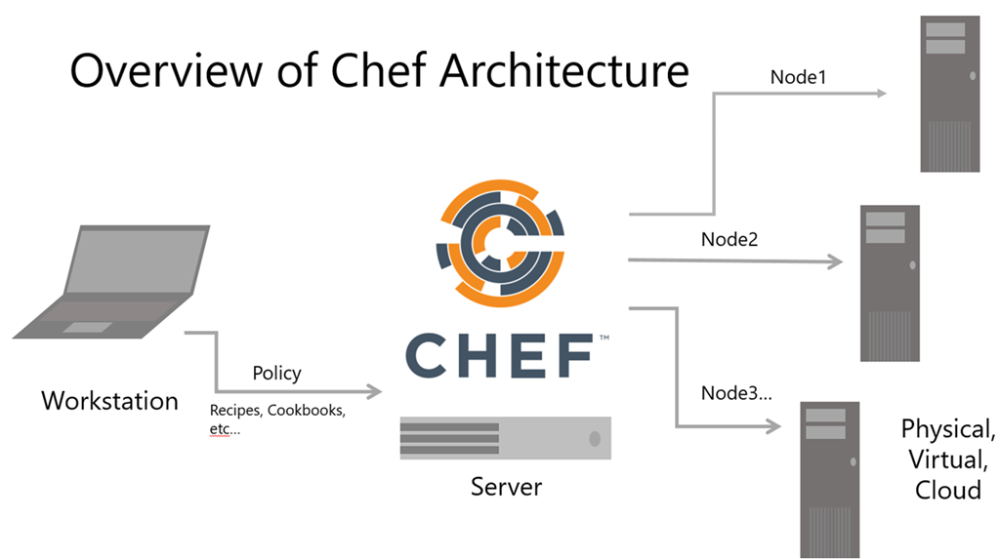

Infrastructure as Code
The Chef platform manages any server component
• System Resources:
Packages, files, services, users, groups, mount points, symlinks, networking components, registry keys, Bash scripts, and PowerShell scripts, etc.
• System resources are represented as code components.
• Infrastructure becomes versionable, testable, and repeatable, while abstracting complex implementation details out.
Chef Architecture
Chef ecosphere components:
• Workstation - where you author and test Chef code
• Chef Server - where cookbooks are distributed to managed nodes
• Nodes - synchronizes with the server and pulls updates to policies
Overview of Chef Architecture

The Workstation
A Chef workstation is where you will develop and test your code.
• Is configured with Chef command-line tools
• Allows authoring and testing of Chef code
• Can interact with a Chef Server and any managed nodes
• To set up a workstation, install the Chef Development Kit (ChefDK)
• Navigate to https://downloads.chef.io/chef-dk/ and select the appropriate installer
The Chef Server
The Chef Server is your hub for configuration data.
• Stores cookbooks, roles, environments, and other policies needed for configuration
• Indexes metadata about nodes
• Acts as a pull server for your nodes
Nodes
Nodes do the heavy lifting of configuring themselves, not the Chef Server.
• Can be physical, virtual, cloud, network devices, containers, etc.
• Use the chef-client service to pull and apply cookbooks from the Chef Server. This process is known as convergence.
• Run system inventory and gather host details with the Ohai tool
Using Chef: Core Components
Basic Chef terms and concepts
• Resource
• Recipe
• Cookbook
• Node object attributes